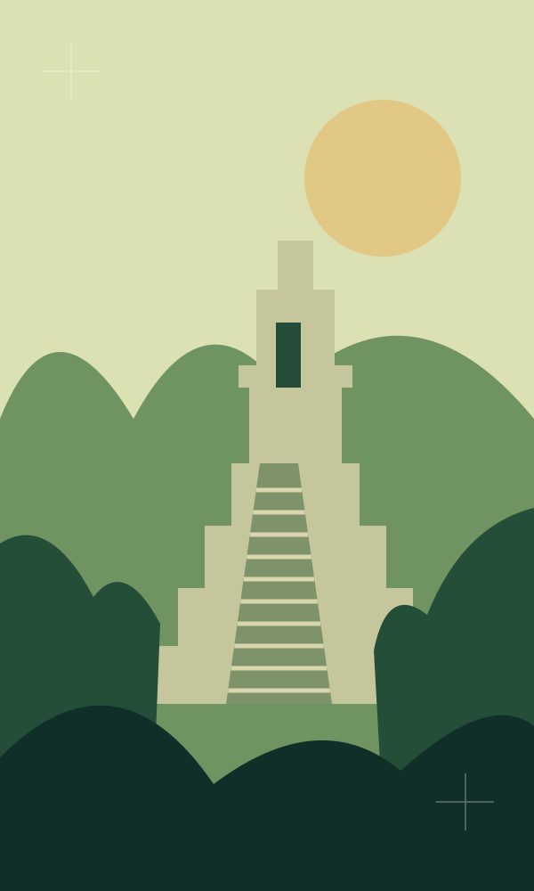
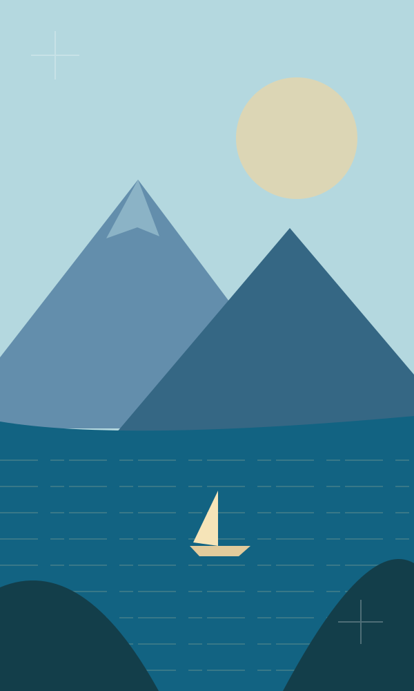
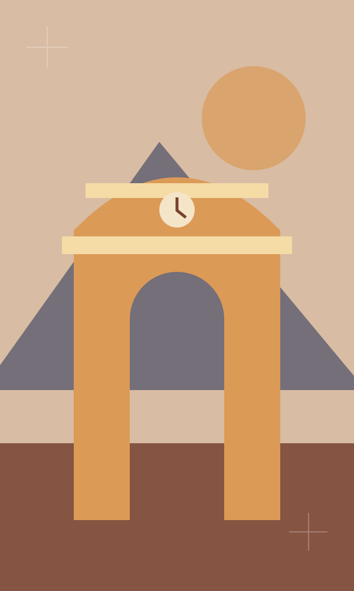
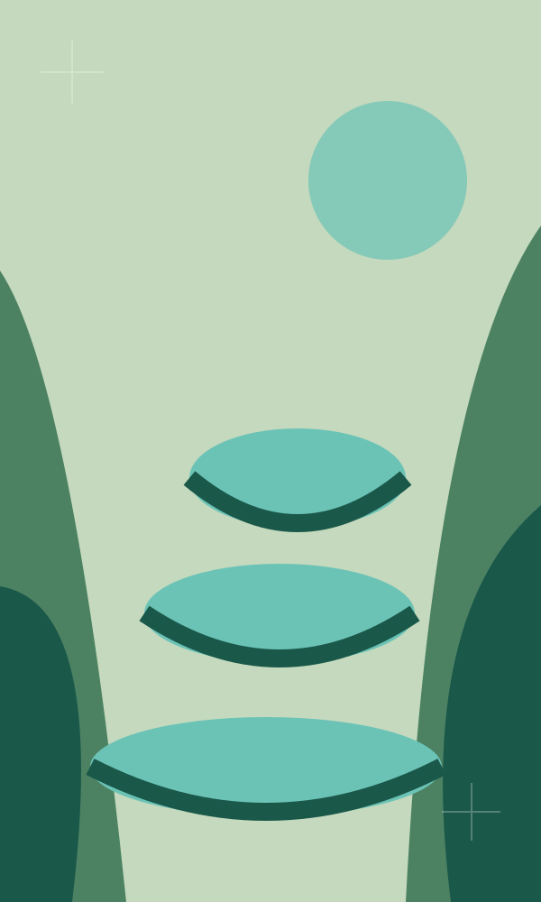
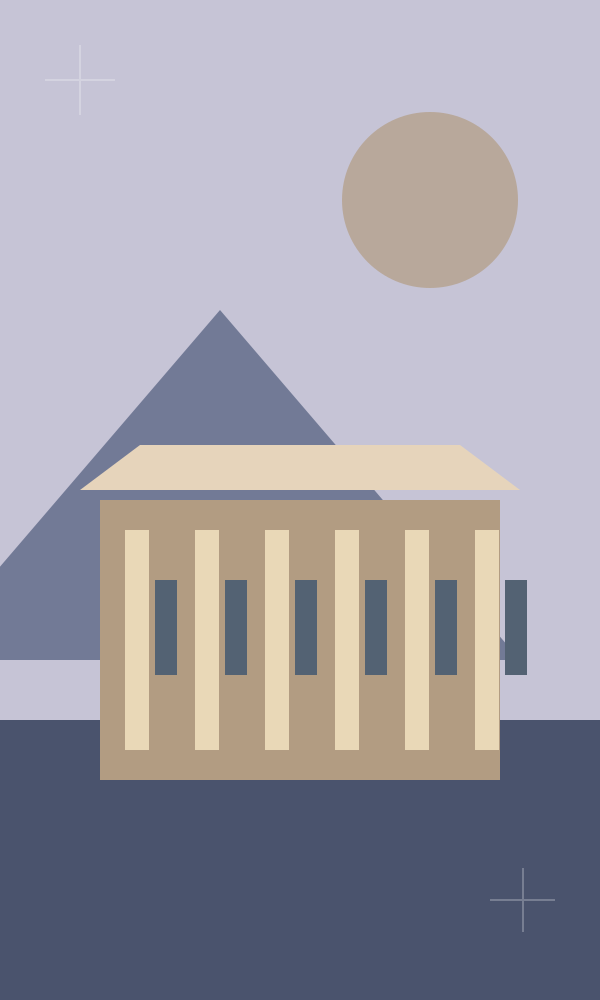

EXPLORA GUATEMALA, CAPÍTULO A CAPÍTULO
Un viaje por
nuestras realidades.
Cada semana, una nueva mirada.
Cada capítulo, un lugar de Guatemala.

Leer capítulo ↗Capítulo 01
Leer capítulo ↗Capítulo 02
Leer Capitulo ↗Capítulo 03
Leer capítulo ↗Capítulo 04
Leer capítulo ↗Capítulo 05Leer capítulo ↗Capítulo 06
ConócenosEL VIAJE APENAS COMIENZA ↓